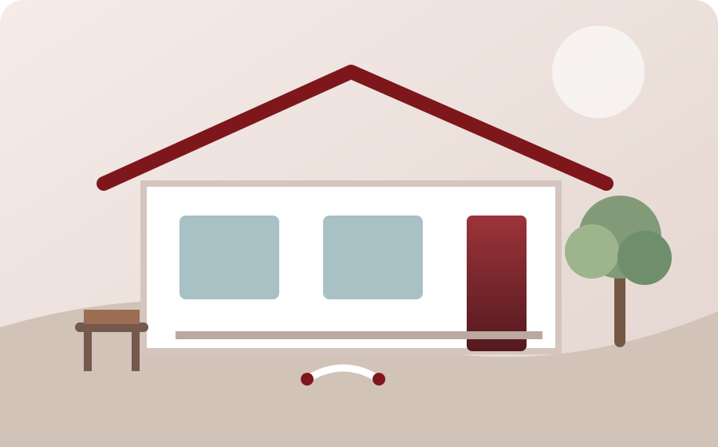

Nuestra misión
Asumir la representación activa, democrática y transparente del estudiantado ante la Dirección y la comunidad escolar del Liceo Mauricio Hochschild (CEAT), fortaleciendo la identidad técnico-profesional, impulsando la mejora continua de las dependencias y ejecutando proyectos con impacto positivo, medible y duradero.
 Ilustración de referencia
Ilustración de referencia01Eje 1
Medio Ambiente y Sustentabilidad Escolar
Fomentar el cuidado del entorno y la responsabilidad ambiental dentro del establecimiento.
1.1 · Puntos Limpios por Pabellón y Talleres
Instalar y rotular estaciones de reciclaje para plásticos, latas y papel/cartón, con calendario de retiro y acopio.
1.2 · Campaña «CEAT Más Verde»
Organizar jornadas voluntarias de arborización y jardinería, con áreas verdes apadrinadas por cursos.
1.3 · Reciclaje de Tapitas y Pilas
Disponer contenedores especiales para recolectar tapitas plásticas y pilas en desuso.

Ilustración de referencia02Eje 2
Cuidado de Infraestructura y Convivencia Escolar
Promover el cuidado de los espacios y facilitar la comunicación de necesidades de infraestructura.
2.1 · «Manos a la Obra»
Convocar jornadas colaborativas para embellecimiento y mantenimiento, como pintado de mobiliario y renovación de señalética.
2.2 · Buzón QR
Canalizar reportes de desperfectos en servicios higiénicos, aulas o talleres para su presentación ante las autoridades correspondientes.
2.3 · Campaña de Cuidado de Espacios Comunes
Realizar cápsulas informativas y acciones de sensibilización sobre el orden, la limpieza y el cuidado del mobiliario.
2.4 · CEAT Te Escucha Iniciativa complementaria
Espacio de participación para recibir ideas, inquietudes y propuestas; evaluar su viabilidad y comunicar su estado a la comunidad.
 Ilustración de referencia
Ilustración de referencia03Eje 3
Deportes, Recreación y Vida Saludable
Incentivar la actividad física, la recreación y el encuentro entre estudiantes.
3.1 · Liga Inter-Cursos CEAT
Programar campeonatos semestrales de baby fútbol, básquetbol y vóleibol, en horarios autorizados.
3.2 · Recreos Activos y Dinámicas Recreativas
Habilitar alternativas recreativas como tenis de mesa, taca-taca y minitorneos.
3.3 · Banco Institucional de Implementos Deportivos
Establecer un sistema de préstamo responsable de implementos deportivos.
Ilustración de referencia
04Eje 4
Identidad y Vinculación Técnico-Profesional (TP)
Fortalecer la identidad técnico-profesional y acercar a los estudiantes a las experiencias de especialidad y del mundo laboral.
4.1 · Muestra de Proyectos e Inducción de Especialidades
Organizar una feria técnica interna con proyectos y experiencias de talleres para orientar a cursos inferiores.
4.2 · Ciclo de Conversatorios con Exalumnos
Coordinar encuentros con egresados para conversar sobre prácticas, continuidad de estudios e inserción laboral.